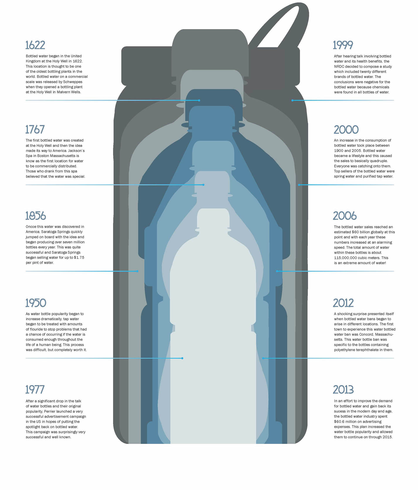

Historical Development
• Bottled water began in the plant in 1622
• In 1862 – Alexander Parkes displays the first manmade plastic at the Great International Exhibition. The material, named Parkesine, when it is heated, it can be molded and then kept in its form when it cools.
• In 1973 – PET (Polyethylene terephthalate) bottles are patented. The first plastic bottles capable of holding carbonated drinks, they become a much cheaper solution to glass bottling.
• In 2007 – the two-liter plastic beverage bottle reaches a new record. Today, a variety of plastic, steel, carton, glass, etc. with a variety of designs are being produced all over the world.
